Definição
“Um banco de dados é uma coleção de dados relacionados”
Fonte: “Sistemas de Bancos de Dados” (7ª edição), Elmasri e Navathe. Pearson, 2016.
Quando estamos falando de Bancos de Dados, o primeiro termo que nos surge à mente, principalmente quando não estamos familiarizados com o assunto, é o SQL.
A questão é que SQL, também conhecido como Structured Query Language, é uma linguagem usada para gerenciar, manipular e consultar dados em um Banco de Dados.
E por isso, é importante aprendermos primeiro o que é um Banco de Dados antes do SQL.
Ou seja, aprenderemos primeiro quem é o estranho com quem iremos conversar, e depois, aprenderemos como conversar com ele.
Definição
“Um banco de dados é uma coleção de dados relacionados”
Fonte: “Sistemas de Bancos de Dados” (7ª edição), Elmasri e Navathe. Pearson, 2016.
Mas quando olhamos para esta definição, isso parece um pouco genérico demais não concorda? Até mesmo os autores do livro afirmam isso, mas existe uma razão, além desta definição, o seu uso cotidiano é bem mais restrito e envolve a existência de mais propriedades como:
Cuidado!
Segundo esta definição, você pode ser levado a afirmar que uma Planilha do Excel
corresponde a um Banco de Dados, entretanto, este costuma ser um ponto bastante discutido
que varia de autor para autor.
Por exemplo, pelos autores de “Sistemas de Bancos de Dados”, dados armazenados no Excel seguindo as
propriedades mencionadas anteriormente, correspondem a um Banco de Dados.
Por outro lado, você não teria dificuldade em encontrar por aí pessoas que afirmam ferozmente que
o Excel não é / não deveria ser, um banco de dados, seja por diferenças na quantidade, permissão e metodologias de acesso/manipulação dos dados.
Definição
“Um banco de dados relacional é um tipo de banco de dados que organiza seus dados em linhas e colunas que, coletivamente, formam uma tabela em que os pontos de dados estão relacionados entre si.”
Fonte: “Bancos de dados Relacionais”, IBM Think.
Em que reforçamos a parte de que os dados estão relacionados, ou seja, através de uma informação, podemos chegar em várias outras.
Para facilitar, vamos tomar o seguinte exemplo, que também servirá como contexto para nosso estudo de caso e desafio ao final desta, e da próxima aula:
Introdução ao desafio da Aula
Suponha que você é o mais novo programador contratado do serviço de entregas do Kiwi. Como esta empresa é pequena e não dispõe de uma infraestrutura robusta, foi solicitado a você, o recém-contratado, que armazenasse informações sobre todos os produtos entregues, clientes e endereços de entrega de cada pedido.
Questão: Como você faria isso?
A parte mais importante para fazermos inicialmente é modelar o nosso problema.
Precisamos armazenar informações do produto, que podem incluir:
E seguindo a mesma lógica, nosso cliente e seu respectivo endereço, podem ter inúmeras outras informações relevantes para nosso entregador.
A solução mais simples para isso é, para cada pedido, armazenar todas essas informações numa linha.
Isso ficaria mais ou menos dessa forma:
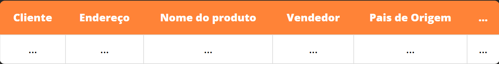
Isso parece resolver o problema, pois cada pedido tem todas as informações que o entregador poderia precisar saber.
Então vamos tentar adicionar alguns pedidos, por exemplo, suponha que o entregador deva entregar peixes comprados de uma certa loja para um certo cliente, chamemos este cliente de João, sendo assim, nossa tabela se parecerá com isso após a adição da compra de João:
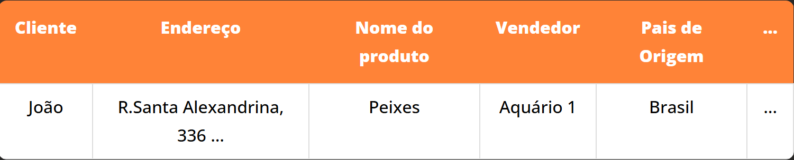
Por enquanto, ainda está tudo certo, mas vamos supor que agora, uma outra cliente, suponhamos, Joana, esteja interessada em comprar os mesmos Peixes que João, então ela fará o mesmo pedido, só que para seu endereço.
Após seu pedido, o Banco de Dados do Serviço de Entregas do Kiwi se parecerá com isso:
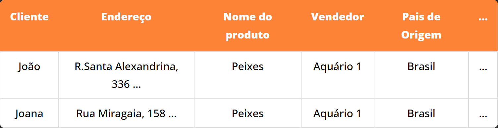
E neste momento, acredito que você já tenha percebido o tamanho desperdício de espaço que estamos fazendo, certo?
Praticamente, temos duas linhas idênticas uma ao lado da outra, e isso está desperdiçando espaço, isso porque já sabemos quais as informações do vendedor de peixes, logo, estamos repetindo os mesmos dados sem necessidade!!!
Esse tipo de repetição é um sinal clássico de que os dados precisam ser reorganizados. O processo de dividir as informações
em tabelas menores, conectadas por chaves (por exemplo, um produto_id ou cliente_id), é conhecido como
normalização.
Além de economizar espaço, a normalização ajuda a evitar anomalias (problemas de inserção, atualização e remoção). Por exemplo: se o telefone do vendedor mudar, você não quer ter que editar dezenas de linhas repetidas para manter o banco consistente.
A questão principal é: Como podemos melhorar isso?
E a resposta é: Usando os pontos de relação entre tabelas!!!
Para fins de exemplo, nossa tabela, utilizando desta característica dos Bancos Relacionais se tornaria algo similar a isto:
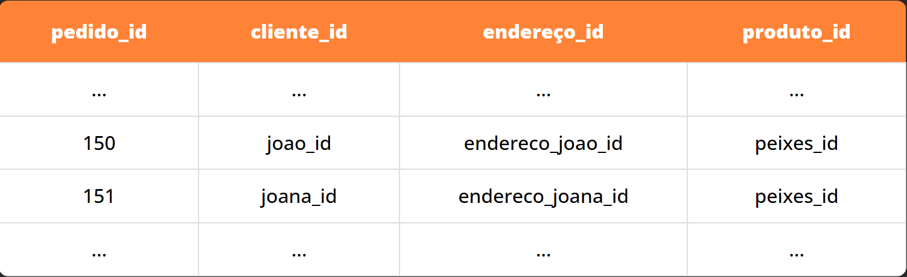
Boa Prática
Quando estamos lidando com SQL, use snake_case para os nomes das propriedades representadas.
Em que cada ID, tem uma correspondência ÚNICA em outra tabela com todas as informações necessárias sobre o dado elemento que procuramos.
Para que essa correspondência funcione de forma confiável, usamos chaves. Em bancos relacionais, elas são a base das relações entre tabelas.
Chave primária (PRIMARY KEY) é a coluna (ou conjunto de colunas) que identifica
cada linha de forma única dentro de uma tabela. Na prática, ela não deve se repetir e
geralmente não pode ser nula. É comum usar um número incremental, como um id.
Chave estrangeira (FOREIGN KEY) é uma coluna em uma tabela que aponta para a chave primária
(ou um valor UNIQUE) de outra tabela. É assim que dizemos “este pedido pertence a este cliente”
ou “esta matrícula pertence a este usuário”, evitando copiar os mesmos dados várias vezes.
Em outras palavras: a chave primária é o identificador, e a chave estrangeira é o link entre tabelas.
Agora que conhecemos, o que são os Bancos de Dados Relacionais, ou seja, sabemos quem é o estranho. Estamos prontos para aprender a conversar com ele. O que significa, que estamos finalmente prontos para aprender sobre SQL!
SQL, ou Structured Query Language, é uma linguagem de programação que nos permite atualizar e consultar bancos de dados.

Para ilustrar como trabalhar com SQL, usaremos o exemplo de um site de aulas, que armazena dados do curso, usuários, entre outras coisas. Um exemplo de tabela que iremos ver está a seguir:
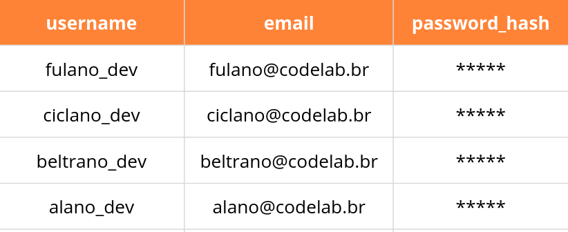
Existem vários sistemas de gerenciamento de banco de dados relacionais diferentes que são comumente usados para armazenar informações e que podem interagir facilmente com comandos SQL:
Os dois primeiros, MySQL e PostgreSQL, são sistemas de gerenciamento de banco de dados mais robustos que normalmente são executados em servidores separados daqueles que executam um site. SQLite, por outro lado, é um sistema mais leve que pode armazenar todos os seus dados em um único arquivo.
Usaremos SQLite ao longo deste curso, pois é um banco leve e fácil de testar localmente.
Assim como trabalhamos com vários tipos de variáveis em Python, SQLite tem tipos que representam diferentes formas de informação. Outros sistemas de gerenciamento podem ter tipos de dados diferentes, mas todos são bastante semelhantes aos do SQLite:
TEXT: Para strings de texto (Ex. nome de uma pessoa)NUMERIC: Uma forma mais geral de dados numéricos (Ex. Uma data ou valor booleano)INTEGER: Qualquer número não decimal (Ex. idade de uma pessoa)REAL: Qualquer número real (Ex. peso de uma pessoa)BLOB (Binary Large Object): Qualquer outro dado binário que possamos querer armazenar em nosso banco de dados (Ex. uma imagem)Agora, para realmente começar a usar SQL para interagir com um banco de dados, vamos começar criando uma nova tabela. Como exemplo, iremos criar uma tabela de usuários simples, o comando para criar uma nova tabela segue abaixo:
CREATE TABLE users(
id INTEGER PRIMARY KEY AUTOINCREMENT,
username TEXT UNIQUE NOT NULL,
email TEXT UNIQUE NOT NULL,
password_hash TEXT NOT NULL
);No comando acima, estamos criando uma nova tabela que decidimos chamar de users, e adicionamos quatro colunas a esta tabela:
id: Muitas vezes é útil ter um número que nos permita identificar exclusivamente cada linha em uma tabela. Aqui especificamos que id, é um inteiro e também que é nossa Chave Primária. Além disso, especificamos o AUTOINCREMENT, o que significa que não precisaremos fornecer um id toda vez que adicionarmos à tabela, pois isso será feito automaticamente.username: Aqui especificamos que este será um campo de texto, e ao escrever NOT NULL exigimos que ele tenha um valor. Ademais, ao escrever UNIQUE, exigimos que este valor seja único naquela coluna.email: Novamente especificamos que este será um campo de texto e impedimos que seja nulo.password_hash: Por último, especificamos que a senha seja armazenada como texto, e que não seja nula.Boa Prática
Em bancos de dados, não devemos guardar uma senha em texto puro! Como exemplo aqui, usamos uma senha com hash. Mas há diferentes maneiras de tratar senhas.
Acabamos de ver as restrições NOT NULL, UNIQUE e reforçamos a PRIMARY KEY ao criar uma coluna, mas existem várias outras restrições disponíveis para nós:
CHECK: Garante que certas restrições sejam atendidas antes de permitir que uma linha seja adicionada/modificadaDEFAULT: Fornece um valor padrão se nenhum valor for fornecidoNOT NULL: Garante que um valor seja fornecidoPRIMARY KEY: Indica que esta é a principal forma de buscar uma linha no banco de dadosUNIQUE: Garante que duas linhas não tenham o mesmo valor nessa coluna.Agora que vimos como criar uma tabela, vamos ver como podemos adicionar linhas a ela. Em SQL, fazemos isso usando o comando INSERT:
INSERT INTO users
(username, email, password_hash)
VALUES ('fulano_dev', 'fulano@codelab.br', '2b$12');No comando acima, especificamos o nome da tabela em que desejamos
inserir, depois fornecemos uma lista dos nomes das colunas sobre as
quais forneceremos informações e, em seguida, especificamos os VALUES que gostaríamos de preencher nessa linha da tabela, garantindo que os VALUES venham na mesma ordem que nossa lista correspondente de colunas. Observe que não precisamos fornecer um valor para id porque ele é incrementado automaticamente.
Depois que uma tabela é preenchida com algumas linhas,
provavelmente queremos uma maneira de acessar os dados dentro dessa
tabela. Fazemos isso usando a consulta SELECT do SQL. A consulta SELECT mais simples em nossa tabela de usuários pode ser mais ou menos assim:
SELECT * FROM users;O comando acima (*) recupera todos os dados da nossa tabela de usuários
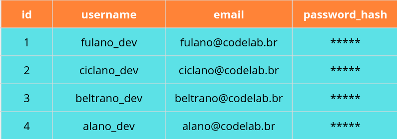
Pode ser o caso, porém, que não precisamos realmente de todas as colunas do banco de dados, apenas username e email. Para acessar apenas essas colunas, podemos substituir o * pelos nomes das colunas que gostaríamos de acessar. A consulta a seguir retorna todos os usernames e emails.
SELECT username, email FROM users;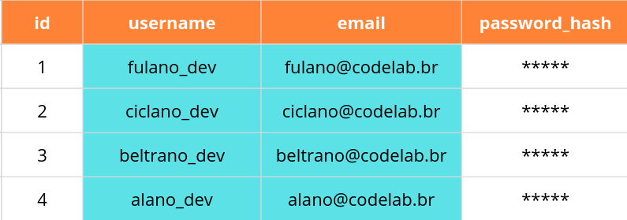
À medida que nossas tabelas ficam cada vez maiores, também
queremos reduzir quais linhas nossa consulta retorna. Fazemos isso
adicionando um WHERE seguido por alguma condição. Por exemplo, o comando a seguir seleciona apenas a linha com um id de 3:
SELECT * FROM users WHERE id = 3;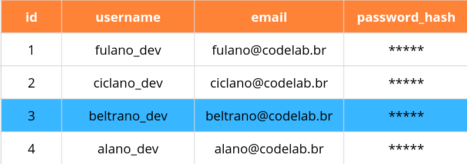
Agora que conhecemos alguns comandos básicos de SQL, vamos testá-los no terminal! Para trabalhar com SQLite em seu computador, você deve primeiro baixar o SQLite. (Não usaremos em aula, mas você também pode baixar o DB Browser para uma maneira mais amigável de executar consultas SQL.)
Podemos começar criando um arquivo para nosso banco de dados criando manualmente um novo arquivo (por exemplo, users.db). Agora, se executarmos sqlite3 users.db no terminal, seremos levados a um prompt SQLite onde podemos executar comandos SQL:
# Entrando no Prompt SQLite
sqlite3 users.db
SQLite version 3.49.1 2025-02-18 13:38:58
Enter ".help" for usage hints.
# Criando uma nova Tabela
sqlite> CREATE TABLE users(
...> id INTEGER PRIMARY KEY AUTOINCREMENT,
...> username TEXT UNIQUE NOT NULL,
...> email TEXT UNIQUE NOT NULL,
...> password_hash TEXT NOT NULL
...> );
# Listando todas as tabelas atuais (Apenas users por enquanto)
sqlite> .tables
users
# Consultando tudo dentro de users (Que está vazio agora)
sqlite> SELECT * FROM users;
# Adicionando um usuário
sqlite> INSERT INTO users
...> (username, email, password_hash)
...> VALUES ('fulano_dev', 'fulano@codelab.br', '2b$12');
# Verificando por novas informações, que agora podemos ver
sqlite> SELECT * FROM users;
1|fulano_dev|fulano@codelab.br|2b$12
# Adicionando mais alguns usuários
sqlite> INSERT INTO users (username, email, password_hash) VALUES ('ciclano_dev', 'ciclano@codelab.br', 'a31lW');
sqlite> INSERT INTO users (username, email, password_hash) VALUES ('beltrano_dev', 'beltrano@codelab.br', 'Wxn96p3');
sqlite> INSERT INTO users (username, email, password_hash) VALUES ('alano_dev', 'alano@codelab.br', '3OXePa');
# Consultando essas novas informações
sqlite> SELECT * FROM users;
1|fulano_dev|fulano@codelab.br|2b$12
2|ciclano_dev|ciclano@codelab.br|a31lW
3|beltrano_dev|beltrano@codelab.br|Wxn96p3
4|alano_dev|alano@codelab.br|3OXePa
# Alterando as configurações para tornar a saída mais legível
sqlite> .mode columns
sqlite> .headers yes
# Consultando todas as informações novamente
sqlite> SELECT * FROM users;
id username email password_hash
-- ------------ ------------------- -------------
1 fulano_dev fulano@codelab.br 2b$12
2 ciclano_dev ciclano@codelab.br a31lW
3 beltrano_dev beltrano@codelab.br Wxn96p3
4 alano_dev alano@codelab.br 3OXePa
# Procurando apenas por um usuário com email ciclano@codelab.br
sqlite> SELECT * FROM users WHERE email = 'ciclano@codelab.br';
id username email password_hash
-- ----------- ------------------ -------------
2 ciclano_dev ciclano@codelab.br a31lWTambém podemos usar mais do que apenas igualdade para filtrar usuários. Para valores inteiros e reais, podemos usar maior que ou menor que:
SELECT * FROM users WHERE id > 1;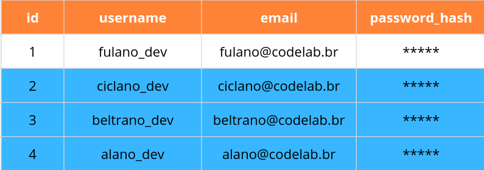
E também podemos usar outra lógica (AND, OR) como em Python:
SELECT * FROM users WHERE id > 1 AND email = 'ciclano@codelab.br';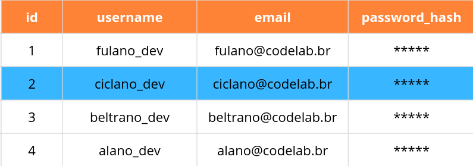
1 e email">SELECT * FROM users WHERE id > 3 OR email = 'fulano@codelab.br';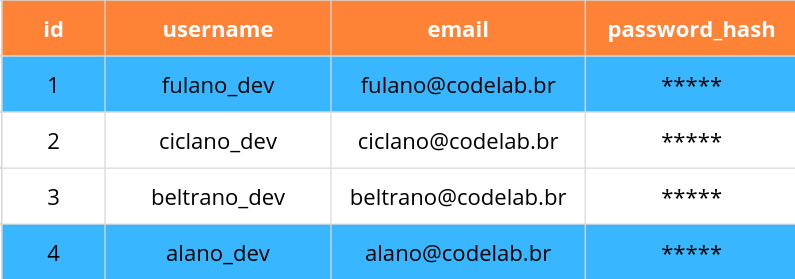
3 ou email">Também podemos usar a palavra-chave IN para ver se um pedaço de dados é uma de várias opções:
SELECT * FROM users WHERE username IN ('fulano_dev', 'ciclano_dev');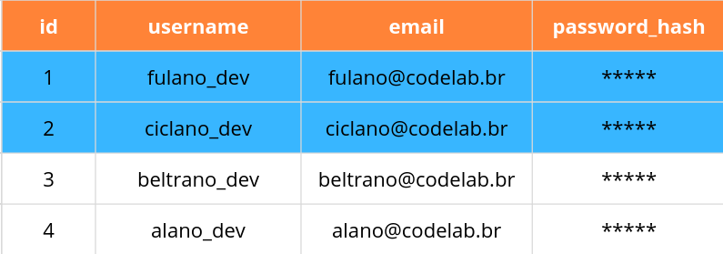
Podemos também pesquisar padrões de texto usando a palavra-chave LIKE. A consulta abaixo encontra todos os resultados cujo username contém um f, usando % como caractere curinga.
SELECT * FROM users WHERE username LIKE '%f%';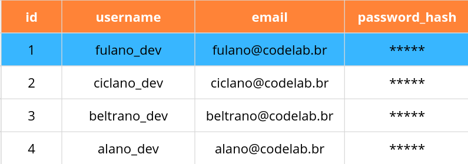
Também há várias funções SQL que podemos aplicar aos resultados de uma consulta. Elas podem ser úteis se não precisarmos de todos os dados retornados por uma consulta, mas apenas de algumas estatísticas resumidas dos dados.
Agora vimos como adicionar e pesquisar tabelas, mas também podemos querer atualizar linhas de uma tabela que já existem. Fazemos isso usando o comando UPDATE como mostrado abaixo. Como você pode ter adivinhado ao ler isso em voz alta, o comando encontra o usuário "alano_dev" e define seu email como alano2@codelab.br .
UPDATE users
SET email = 'alano2@codelab.br'
WHERE username = 'alano_dev';Também podemos querer a capacidade de excluir linhas do nosso banco de dados, e podemos fazer isso usando o comando DELETE.
DELETE FROM users WHERE username = 'alano_dev';Por último, finalizando os principais comandos e instruções de modelagem em SQL, temos a cláusula que estabelece a relação entre diferentes tabelas.
Seu uso costuma ser a combinação da definição de qual campo é uma FOREIGN KEY e a qual campo de qual outra tabela ela está fazendo referência.
Suponha que queiramos melhorar o sistema, e agora guardaremos informações dos professores e dos cursos ministrados por eles, para isso, precisaremos estabelecer uma identificação para cada professor e para cada curso, e em seguida, indicar no curso, uma ligação entre ele, e o identificador único do professor que o ministra.
CREATE TABLE professores (
id INTEGER PRIMARY KEY AUTOINCREMENT,
nome TEXT NOT NULL,
email TEXT UNIQUE
);
CREATE TABLE cursos (
id INTEGER PRIMARY KEY AUTOINCREMENT,
nome TEXT NOT NULL,
professor_id INTEGER NOT NULL,
FOREIGN KEY (professor_id) REFERENCES professores(id)
);
No exemplo acima, professor_id na tabela cursos é uma chave estrangeira
que aponta para id em professores. Assim, cada curso fica associado a um professor válido,
evitando inconsistências de dados.
Dado o modelo de nossa tabela, observe que cada curso precisa do ID de um professor, logo, podemos inseri-lo de duas formas:
INSERT INTO professores (nome, email)
VALUES ('deltrano_dev', 'deltrano@codelab.br');
INSERT INTO cursos (nome, professor_id)
VALUES ('Introdução ao SQL', 1);INSERT INTO professores (nome, email)
VALUES ('elano_dev', 'elano@codelab.br');
INSERT INTO cursos (nome, professor_id)
VALUES ('Introdução ao SQL', (SELECT id FROM professores WHERE email = 'elano@codelab.br'));
No primeiro caso, usamos professor_id = 1 pois estamos assumindo que deltrano_dev seja o primeiro dado a ser inserido na tabela.
Perceba também que o comando para buscar o id está entre parênteses.
Nesse contexto, os parênteses indicam que estamos usando uma subconsulta para retornar
um único valor no lugar de um valor literal.
Cuidado!
Observe que: Primeiro criamos a tabela professores,
porque a tabela cursos depende dela na cláusula REFERENCES professores(id).
Depois inserimos o professor e só então inserimos o curso, já que o valor de professor_id
precisa apontar para um id que já exista. Se tentarmos inserir um curso antes de existir
o professor correspondente, o banco rejeita a operação para proteger a integridade dos dados.
Como regra geral, lembre-se de que a execução desses comandos em script é similar a um script em Python, em que
as operações sempre são executadas em ordem sequencial.
Existem várias cláusulas adicionais que podemos usar para controlar as consultas que nos retornam
Até agora, trabalhamos apenas com uma tabela por vez, mas muitos bancos de dados na prática são preenchidos por várias tabelas que se relacionam de alguma forma. Como exemplo, no CodeClass, além da tabela de usuários, podemos ter uma tabela de cursos, mostrando cada curso disponível. Então, poderíamos relacionar as duas tabelas.
A tabela de cursos pode ser mais ou menos assim
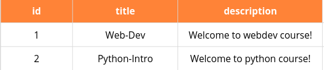
Dessa forma, podemos relacionar os usuários com cursos.
Entretanto, um usuário pode estar inscrito em vários cursos, então se
tivéssemos que relacionar os usuários com seus cursos, teríamos que
criar várias colunas na tabela users, o que não é intuitivo. Assim, podemos criar mais uma tabela enrollments, que armazena as matrículas dos usuários. Ela se parece como:
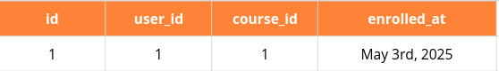
Agora temos uma tabela enrollments, onde cada matrícula está
relacionada a um usuário e a um curso. Como estamos usando a coluna id da tabela de usuários para preencher user_id e id da tabela de cursos para preencher course_id, chamamos esses valores de Chaves Estrangeiras.
A relação entre users e courses é conhecida como Muitos para muitos.
A tabela de matrículas é conhecida como uma tabela de associação, pois associa as tabelas users e courses.
Dessa forma, criamos diferentes tabelas que irão nos proporcionar uma melhor organização.
Embora nossos dados agora estejam armazenados de forma mais eficiente, parece que pode ser mais difícil consultar nossos dados. Felizmente, SQL tem uma consulta JOIN onde podemos combinar duas tabelas para os propósitos de outra consulta.
Por exemplo, digamos que queremos listar todos os cursos de um usuário, então:
SELECT courses.title
FROM courses
JOIN enrollments ON courses.id = enrollments.course_id
WHERE enrollments.user_id = 1;Aqui, o que fizemos foi selecionar os títulos dos cursos em que o usuário de id 1 está inscrito.
Para juntar as tabelas de curso e matrículas, procuramos linhas em enrollments onde courses.id = enrollments.course_id, o que conecta os cursos às matrículas.
Acabamos de usar algo chamado INNER JOIN, o que significa que estamos ignorando linhas que não têm correspondências entre as tabelas, mas existem outros tipos de junções, incluindo LEFT JOIN, RIGHT JOIN e FULL OUTER JOIN, que não discutiremos aqui em detalhes.
Uma maneira de tornar nossas consultas mais eficientes ao lidar com tabelas grandes é criar um índice semelhante ao índice que você pode ver no final de um livro didático. Por exemplo, se sabemos que frequentemente procuraremos usuários por username, poderíamos criar um índice de username usando o comando:
CREATE INDEX user_username_index ON users (username);Agora que sabemos o básico de usar SQL para trabalhar com dados, é importante destacar as principais vulnerabilidades associadas ao uso de SQL. Começaremos com Injeção SQL.
Um ataque de injeção SQL é quando um usuário malicioso insere código SQL como entrada em um site para contornar as medidas de segurança do site. Por exemplo, digamos que nossa tabela de usuários seja mais simples (com username e password), e então um formulário de login na página inicial de um site. Podemos procurar o usuário usando uma consulta como:
SELECT * FROM users
WHERE username = '<username>' AND password = '<password>';Um usuário chamado Harry pode acessar este site e digitar harry como nome de usuário e 12345 como senha, caso em que a consulta seria assim:
SELECT * FROM users
WHERE username = 'harry' AND password = '12345';Um hacker, por outro lado, pode digitar harry' -- como nome de usuário e nada como senha.
Acontece que -- representa um comentário em SQL, então a consulta ficaria assim:
SELECT * FROM users
WHERE username = 'harry' -- ' AND password = '12345'
;Porque nesta consulta a verificação de senha foi comentada, o hacker pode fazer login na conta de Harry sem saber sua senha. Para resolver este problema, podemos usar:
A outra principal vulnerabilidade quando se trata de SQL é conhecida como Condição de Corrida.
Uma condição de corrida é uma situação que ocorre quando várias consultas a um banco de dados ocorrem simultaneamente. Quando essas não são tratadas adequadamente, podem surgir problemas nos momentos precisos em que os bancos de dados são atualizados. Por exemplo, digamos que eu tenha $150 na minha conta bancária. Uma condição de corrida pode ocorrer se eu fizer login na minha conta bancária tanto no meu telefone quanto no meu laptop e tentar sacar $100 em cada dispositivo. Se os desenvolvedores de software do banco não lidaram com condições de corrida corretamente, então eu posso conseguir sacar $200 de uma conta com apenas $150. Uma solução potencial para este problema seria bloquear o banco de dados. Poderíamos não permitir nenhuma outra interação com o banco de dados até que uma transação seja concluída. No exemplo do banco, depois de navegar para a página "Fazer um Saque" no meu computador, o banco pode não me permitir navegar para essa página no meu telefone.
Isso é tudo para esta aula!
Na próxima, veremos como utilizar esta base teórica para implementar nossa própria API, e como podemos, ainda, simplificar toda a sua construção em Python através do SQLModel.